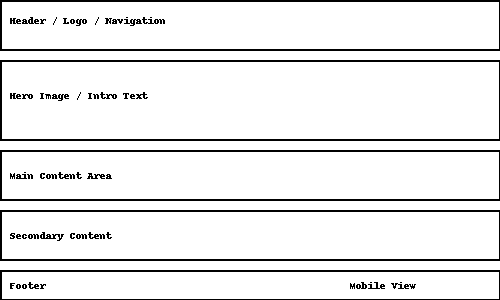
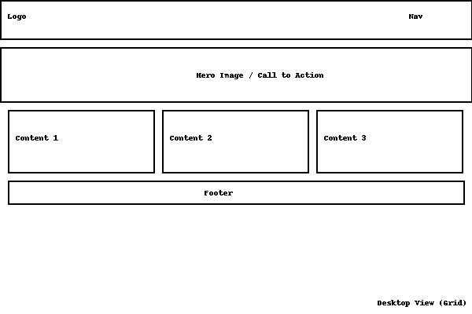

FX Mastery Hub
This name reflects the site's purpose of helping individuals master the forex market through coaching and education. It communicates professionalism, focus, and expertise in forex trading.
Optional domain: fxmasteryhub.com
The purpose of the site is to offer educational resources, coaching services, and tools for aspiring forex traders. It will serve as a hub for learning, mentorship, and connecting with a professional forex coach.
Mobile View:
Desktop View:
